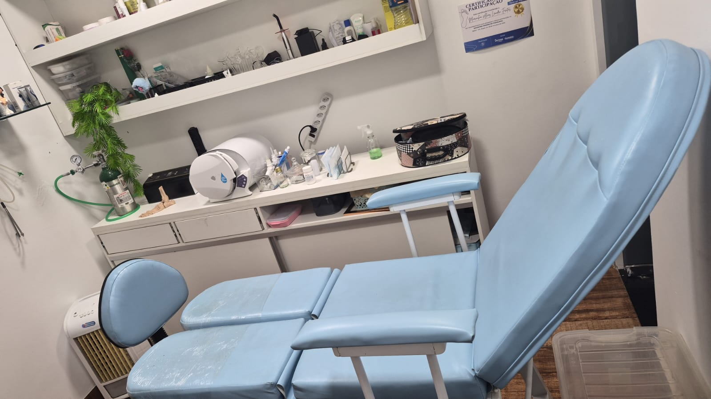
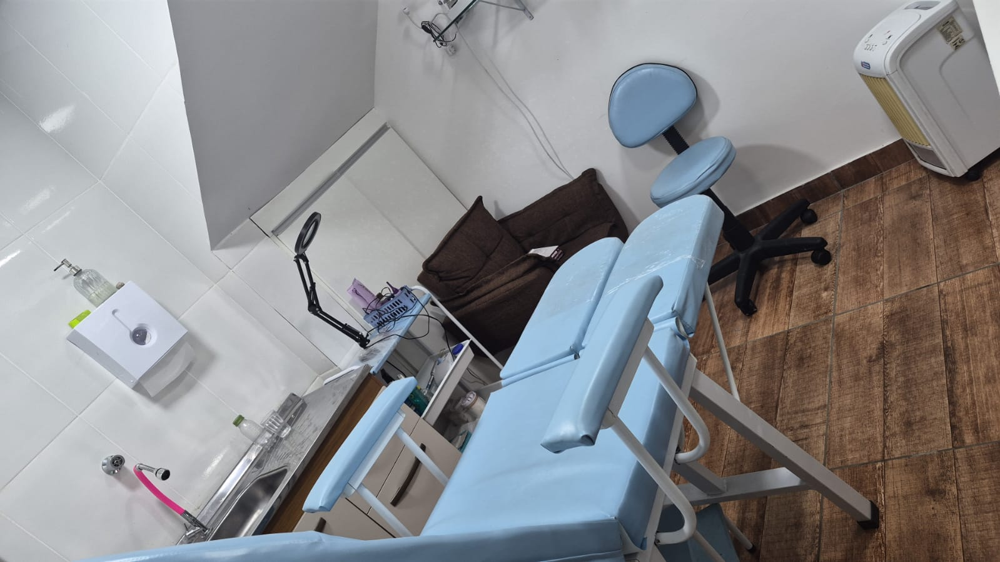
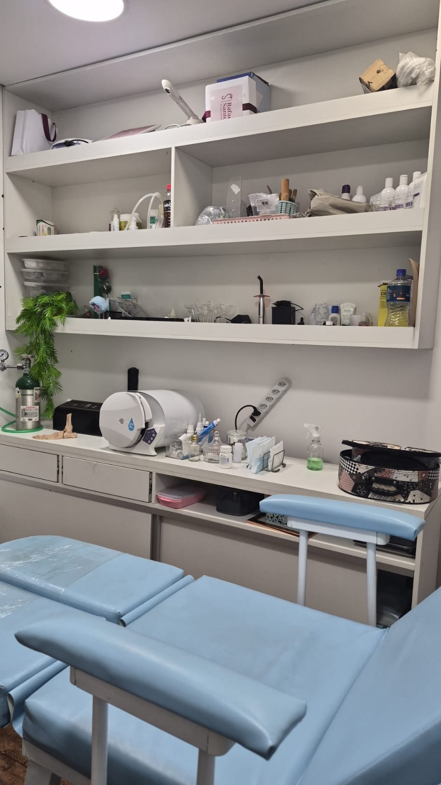
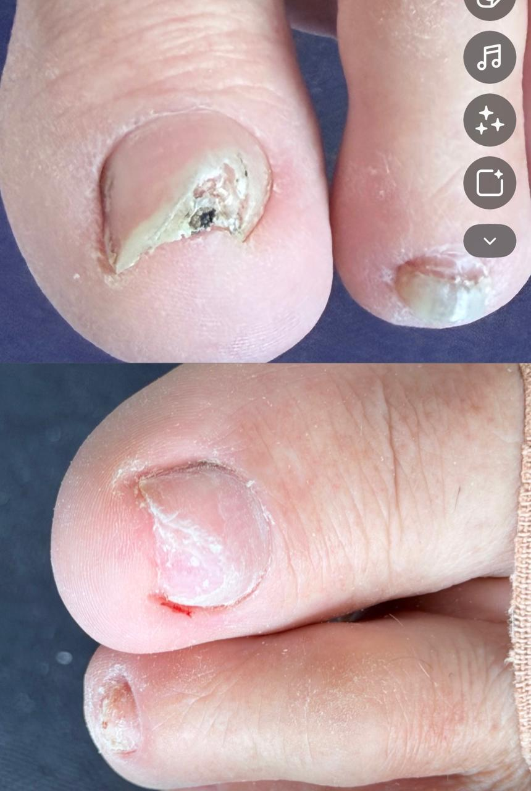
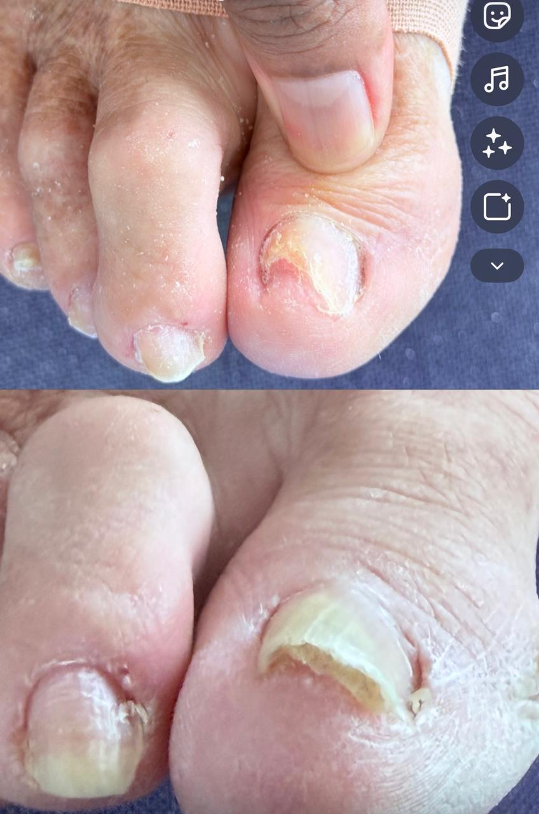
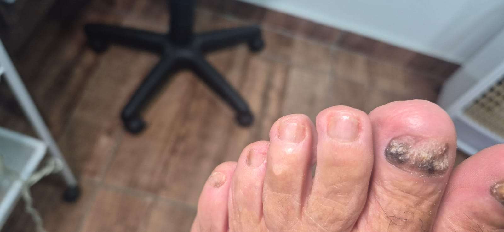
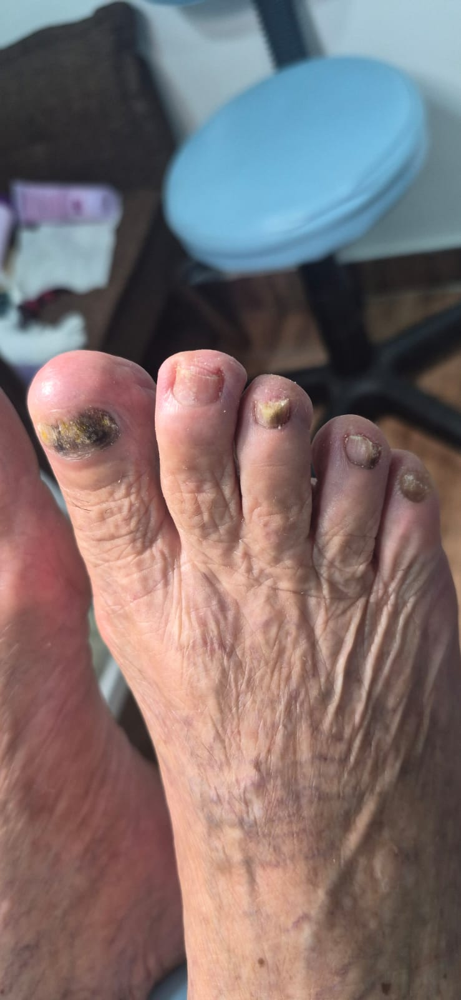
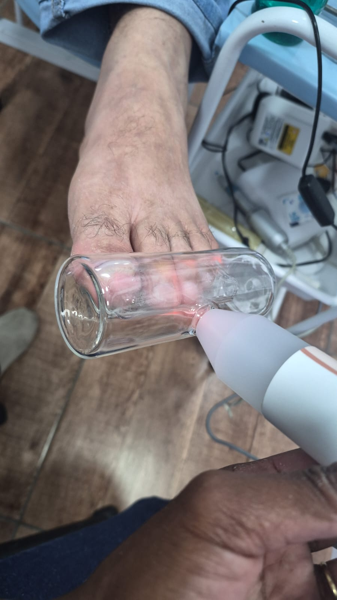
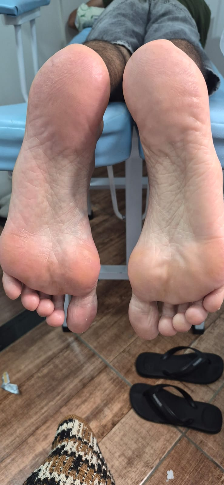
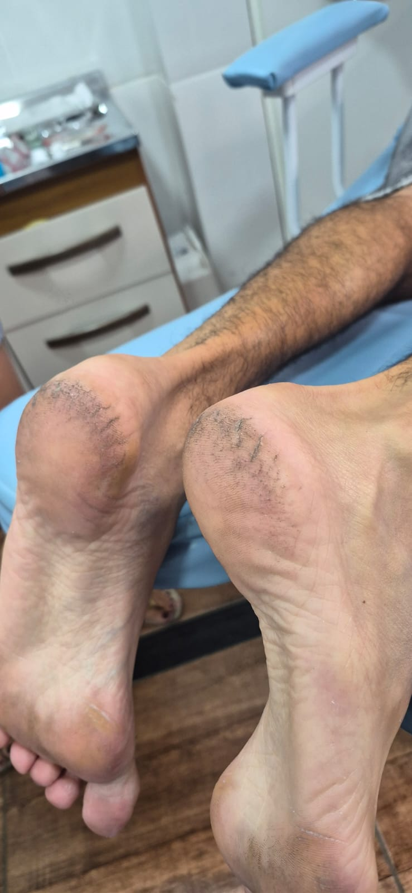

Escuta antes de começar
Converso com você sobre o que incomoda antes de qualquer procedimento.
Podologia no Lindeia - Belo Horizonte
Podologia para quem quer pisar com mais conforto.
Antes de começar, quero entender o que está incomodando você.

Sobre mim
Olá, sou Mari Alves.
Podóloga a +15 anos de experiência na área da saúde.Promovo prevenção,tratamento e bem-estar para que cada passo seja mais leve e saudável.Foco,fé e disciplina no cuidado diario.
Marcar com a MariAtendimento podológico
Me conte o que está incomodando e eu te passo os valores.
Solicitar orçamentoEspaço e atendimentos
Imagens do consultório e de registros de atendimentos.









Atendimento
Converso com você sobre o que incomoda antes de qualquer procedimento.
Você sabe o que será feito e por quê.
Ensino como cuidar dos pés entre um atendimento e outro.
Materiais organizados e ambiente limpo.
Contato
Me chame para consultar horários ou tirar suas dúvidas.